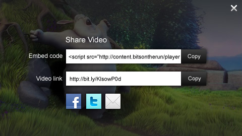

This guide explains the features and options of the Social Sharing overlay, built into the Premium and Ads editions of JW6.
The sharing overlay of JW Player provides a dialog window that can contain:
Users can activate the overlay by clicking the Video Sharing button in the top left of the display. Here is a screenshot of the overlay in action:

If the overlay is activated while the video is playing, playback is automatically paused. Users return to the video by clicking the top-right "X" (or anywhere else outside the overlay).
The sharing functionality is activated by setting the sharing configuration block. Inside this block, the following options can be set. They are all optional:
http://example.com/videos/12345/
<iframe src="http://example.com/12345.html" width="480" height="270" frameborder="0" scrolling="auto" />
Since the embed code may contain special characters like <, " or &, you should URIEncode the string in the embed code of your player. The JW Player will automatically decode your string when it is loaded. Below example shows how to do so.
Here is a basic setup example of a player using the sharing plugin. Since no options are provided, the sharing overlay displays only the link and buttons, using the current webpage:
<script type="text/javascript">
jwplayer("container").setup({
file: "/videos/12345.mp4",
sharing: {
code: encodeURI("<iframe src='http://example.com/embed/12345.html' />"),
link: "http://example.com/page/12345/"
}
});
</script>
Here is another, more extensive example. It sets a custom embed code and video link. Again note the code is URI encoded, so the browser will have no troubles displaying the code:
<script type="text/javascript">
jwplayer("container").setup({
file: "/videos/12345.mp4",
sharing: {
code: encodeURI("<iframe src='http://example.com/embed/12345.html' />"),
link: "http://example.com/page/12345/"
}
});
</script>
See Embedding JW Player for more info on embedding.
When using a playlist containing multiple videos, it is possible to set distinct sharing links per item. Therefore, use the string MEDIAID in the code and/or link configuration options. JW Player will, for each video in the playlist, automatically replace the MEDIAID string with the actual mediaid of the video. Example embed:
jwplayer("container").setup({
playlist: [{
file: "/videos/12345.mp4",
mediaid: "12345"
},{
file: "/videos/67890.mp4",
mediaid: "67890"
}],
sharing: {
code: encodeURI("<iframe src='http://example.com/embed/MEDIAID.html' />"),
link: "http://example.com/page/MEDIAID/"
}
});
Again, note that Social Sharing is only available in the Premium and Ads editions of JW Player.